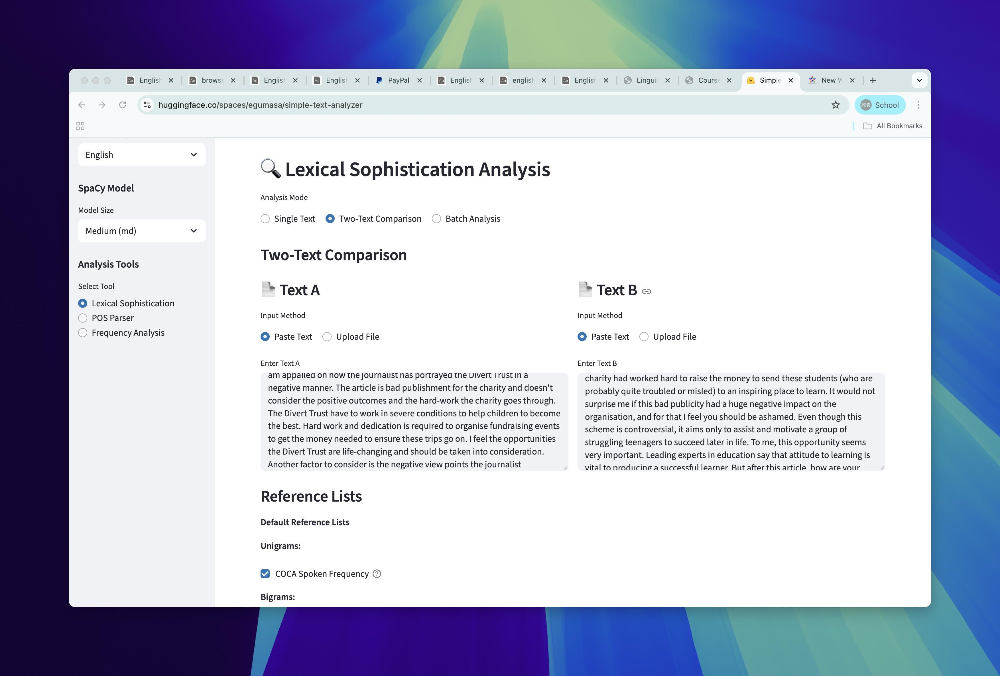
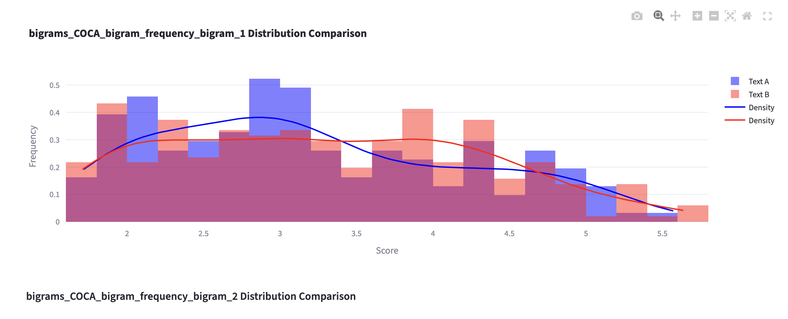

[1] 0.25Session 8: Hands-on activity #4
Masaki EGUCHI, Ph.D.
Housekeeping
Session overview
üéØ Learning Objectives
By the end of this session, students will be able to:
- Search for window-based collocations and n-grams in AntConc
- Calculate commonly used strengths of association measures by hand using spreadsheet software
- Discuss benefits and drawbacks of different strength of association measures
Corpus Lab 2
Corpus Lab 2: Submission
- Task 1: Japanese Word Frequency List and small write-up (5 points)
- Task 2: Replication of Durrant’s analysis from Figure 4.19 (5 points)
- research question,
- hypothesis,
- plots, and
- results
- Task 3: Comparison of two texts in terms of lexical sophistication (5 points)
Corpus Lab 2: Task 1
Instruction
Task 1: Compile a Japanese Word Frequency list
Task
Compile a Japanese frequency list based on a corpus.
Resource
- Download a Japanese text
Aozora 500from Google Drive. - Use AntConc, TagAnt, and Simple Text Analyzer.
Submission for task 1
- Submit a frequency list
.tsvor.txt. - A short description of word frequency pattern in Japanese.
Success Criteria
Your submission …
Corpus Lab 2: Task 2
Instruction
Goal: to replicate analysis on GiG.
You will need to have access to both metadata file.
The corpus data is here.
About GiG meta data
- GiG metadata documents the necessary data to use for plotting
- Year Group (X-axis in Figure 4.19)
- Genre (grouping variable in Figure 4.19)

GiG Metadata
Writing up research question, hypothesis, and results
- Research question?
- Hypothesis: Write your own.
- Results: Write your own.
Success Criteria
Your submission …
Corpus Lab 2: Task 3
Comparing lexical characteristics of two texts
Goals
- Compare and contrast two texts along with several lexical diversity metrics
- Observe differences in single-word and multiword sophistication
Data
- Choose two texts from the ICNALE GRA
- If you are unsure, use choose from the following three files:
- GRA_PTJ0_124_ORIG.txt
- GRA_PTJ0_070_ORIG.txt
- GRA_PTJ0_112_ORIG.txt
Step 1: Qualitatively compare two files
- Before we actually obtain lexical sophistication measures, compare two texts in terms of their lexical use.
- In pairs, describe the strengths and weakeness in vocabulary use.
Step 2: Hypothesis
- In what way is one text more lexically sophisticated than the other?
- Try to come up with characteristics that describe the
quality of word usein each text
- Try to come up with characteristics that describe the
Step 3: Pick two or three lexical sophistication variables
Enter the text into analyzer
We can also compare two texts in simple text analyzer.
two-text
Step 4: Run analyses
Plots that compares two lists
!
Step 5: Interpret the findings
- Let’s discuss how the two text differ in lexical use from one another.
- Use the tables with token information and visualization to (dis)confirm your hypothesis
Success Criteria
Your submission …
Correction about expected frequency
Expected Ocurrences (Correction)
Expected frequency tries to get “number of times two words occur together if they were truly independent at chance level.”
Expected frequency are usually calculated as follows: \[E_{11} = {(\text{freq of node word} * \text{freq of collocate } ) \over Corpus size}\]
If word1 and word 2 occur 500 times each in a million word corpus…
Differences between expected frequency & Joint probability
They are mathematical conversion between the two.
\(\text{Joint Probability} = {500 \over 1000000} \times {500 \over 1000000}\)
This is probability, to convert back to COUNT over all corpus, you multiply the corpus size
\(\text{Expected frequency} = {500 \over 1000000} \times {500 \over 1000000} \times 1000000\)
Generating N-gram list
Generating N-gram list with AntConc (10 mins)
Let’s generate a list of n-grams.
You can use either English or Japanese.
For Japanese you can use
Aozora 500data we used.For English you can use
Ame06orB06data in AntConc.
three-word sequences
- You can (a) load corpus, (b) go to N-gram, (c) apply settings, and (d) hit start.
Trigram in BE06
five-word sequences
- Now let’s examine 5 word sequences
Quintgram in BE06
Jumping to KWIC view from the list
In AntConc, we can jump from the item in the list to show KWIC.
KWIC
Generating P-frame list with AntConc
- Let’s now generate p-frame.
- Set openslot to 1. Hit start. What do you see?
P-frames
Questions?
Searching collocations with AntConc (10-15 mins)
Recap: What is collocation?
- Collocation
- node word:
play - collocates:
role,game,sports, etc.
Collocation in AntConc
You can search collocation by entering node words
- Open AntConc, load
BROWNcorpus. - Go to
Collocate - Enter
playin search window and hitStart
You should get the following.
Collocation search in AntConc
Try a few different search terms.
- Any node word you want to search?
Some options
| Option name | Description |
|---|---|
| Window Span | Specifies how many words on the left or right do you consider as candidates. |
| Min. freq | how many times the collocation must occur |
| Min. Range | how many document must the collocation occur in |
Any questions?
Calculating Strengths of Association (SOA) measures (40 mins)
Calculating SOA by hand
- Open Google Sreadsheet.
- Build function to calculate the following SOA measures
- T-score
- Mutual Information
- Mutual Information Squared (\(MI^2\))
- LogDice
Preparation
- Copy and paste word frequency list in
frequencytab
frequency list
Enter the node and collocates
- Now retrieve word frequencies from the frequency list, using function called
vlookup.
retrieve frequency
Collocation frequency (observed)
- Enter node word in search window and look for FreqLR.
Observed frequency
Enter Observed frequency and window size
Enter O11
Expected frequency
Now we will enter formula for the expected frequency.
\[E_{11} = {(freq_{node} * freq_{collocate} ) \over Corpus size}\]
- This formula says:
- The expected frequency of collocation would be joint probability of the two words.
Expected frequency
- \(E_{11} = {(freq_{node} * freq_{collocate} ) \over Corpus size}\)
expected-frequency
Mutual Information
Finally, we will enter the following formula.
\[MI = {log_2{ Observed freq \over Expected frequency }}\]
Calculating MI
Wait …
- Our calculation shows that MI = 8.69
- AntConc says 5.377 …

AntConc MI
Why are the scores different?
- I was also confused…
- It appears based on this conversation in google group that corpus tools are adjusting the observed frequency by multiplying
window size. - This means that Expected frequency becomes
\(E_{11} = {(freq_{node} * freq_{collocate} * \color{red}{window size}) \over Corpus size}\)
Okay.. now what?
Let’s fix the expected frequency count.

Fixed expected frequency
- Okay close enough!
Confirming with Casual Conc
- Our score actually is also close to that of Casual Conc
Collocation
Take-away…
- Even widely used corpus software may give you slightly different SOA scores, because of possible differences in counting strategies, tokenization, etc..
- AntConc and Casual Conc likely uses:
- \(E_{11} = {(freq_{node} * freq_{collocate} * \color{red}{window size}) \over Corpus size}\)
- It is very important to triple-check your work and…
Report exactly what you did (for replication)
Replicability is key to science.
For example, you might say.
e.g., I used AntCont version 4.2.x
e.g., MI was calculated using the following formula
- \(MI = {log_2{ Observed freq \over Expected frequency }}\)
- where the expected frequency is calculated as:
- \(E_{11} = {(freq_{node} * freq_{collocate} * \color{red}{window size}) \over Corpus size}\)
Questions?
Let’s finish it up
R1 = Frequency of node word
C1 = Frequency of collocate
\(MI = {log_2{ Observed freq \over Expected frequency }}\)
\(\text{T-score} = {\text{Observed} - \text{Expected} \over \sqrt{Observed}}\)
\(\text{log Dice} = 14 + \log_2( {{2 \times Observed} \over {R_1 + C_1}})\)
Results should look like something
- LogDice:
- Ours: 6.548
- AntConc: 6.551 Likely multiplying window size in the denominator.
- CasualConc: 11.14 ???
- T-score:
- Ours: 2.927
- AntConc: 2.928 (Almost identical)
- CasualConc: 2.99 (close)
(If time allowed) how can I generate a collocation list?
- You can take a look at the following notebook
Reflection
- You can now do the followings:
- Generate lists of n-grams and p-frames using AntConc.
- Search for collocates with AntConc.
- Calculate major Strengths of Association (SOA) measures by hand.
Congratulations!!
Linguistic Data Analysis I